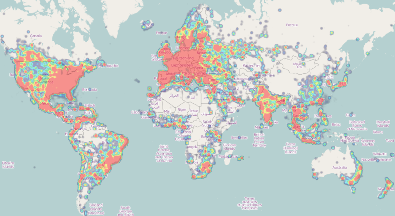
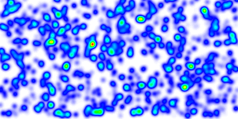
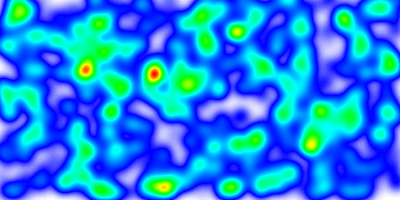
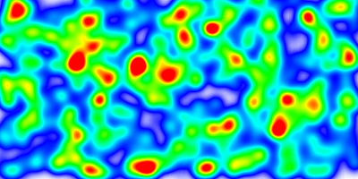
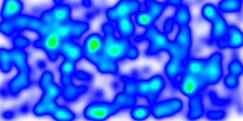
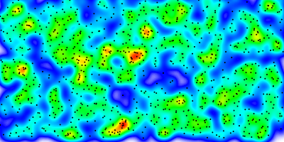
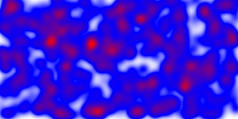

MS RFC 108: Dynamic Heatmap (Kernel Density Estimation) Layers¶
- Date:
2014/01
- Author:
Thomas Bonfort
- Contact:
- Author:
Mathieu Coudert
- Contact:
- Status:
Adopted
- Version:
MapServer 7.0
- Last Updated:
2014/02/13
1. Motivation¶
Heatmaps are a popular method to represent sparse data on a regular raster grid, where each pixel on the grid is influenced inversely to its distance to each sample of the sparse dataset. They are usually represented with a color-ramp where the hue encodes the density of the data sample, optionally along with the intensity of an attribute. The “heatmap” term itself is used with varying meanings; in the context of this RFC, we will be using it to reference Kernel Density Estimation maps.

Example Kernel Density Estimation Map (image cc-by-sa wikipedia)¶
This RFC proposes the addition of a vector to raster processing pipeline that will transform an input vector source into a 1-band 8-bit raster that can then be styled with mapserver’s native raster handling.
2. Proposed Addition¶
Adding a heatmap layer requires the following major changes to the mapserver library:
implementation of an “kerneldensity” connectiontype for raster layers, where the connection refers to another mapfile layer or group used as the vector datasource - implementation of the actual vector to raster transformation:
accumulate vertice in a 1-band floating point bitmap array
apply gaussian filtering to the bitmap, with a configurable radius
apply normalization to scale the bitmap cells to 8bits
create an in-memory GDAL datasource from the 8bit bitmap
extend the raster RANGE support to allow for missing features usually needed for heatmap color ramps:
allow multiple ranges (to allow for color ramps with multiple stops)
allow color interpolation in HSL space instead of RGB
account for alpha values in color interpolation
2.1 Vector to raster operations¶
The vector to raster pipeline is called from inside mapserver’s high-level raster handling when handling a layer with CONNECTIONTYPE KERNELDENSITY. The output of this operation is a handle to a GDAL datasource that can then be processed normally by the remainder of the raster handling code.
While a more generic API could be designed for handling this vector-to-raster pipeline, the initial implementation will branch off to a heatmap specific handler. Reflections on the design of such an API can be delayed until the need for other vector-to-raster transformations arises, designing one for the scope of this RFC seems like premature over-engineering.
The heatmap vector-to-raster takes the following parameters:
CONNECTION “layername” : reference to the NAME or GROUP of a layer to use as an input vector datasource. NAME takes precedence, followed by the first layer from GROUP who’s minscale/maxscale matches the current map scale. The referenced layer should probably a TYPE POINT layer. Other layer types will result in one sample being added for each vertex of the input features.
PROCESSING “KERNELDENSITY_RADIUS=10” : radius in pixels of the gaussian filter to apply to the bitmap array once all features have been accumulated. Higher values result in increased cpu time needed to compute the filtered data.

result with a radius set to 10 pixels¶

result with a radius set to 20 pixels¶
PROCESSING “KERNELDENSITY_COMPUTE_BORDERS=ON|OFF” : A kernel of radius “r” cannot be applied to “r” pixels along the borders of the image. The default is to extend the searchrect of the input datasource to include features “r” pixels outside of the current map extent so that the computed heatmap extends to the full extent of the resulting image. This can be deactivated when tiling if the tiling software applies a metabuffer of “r” pixels to its requests, to avoid the performance overhead of computing this extra information.
PROCESSING “KERNELDENSITY_NORMALIZATION=AUTO|numeric” : if set to “AUTO”, the created raster band will be scaled such that its intensities range from 0 to 255, in order to fully span the configured color ramp. Such behavior may not be desirable (typically for tiling) as the resulting intensity of a pixel at a given location will vary depending on the extent of the current map request.If set to a numeric value, the samples will be multiplied by the given value. It is up to the user to determine which scaling value to use so the resulting pixels span the full 0-255 range; determining that value is mostly a process of trial and error. Pixels that fall outside the 0-255 range will be clipped to 0 or 255.

fixed scaling applied. compared to the previous images, the greater number of red areas results from the fact that the chosen scaling factor made a large number of pixels overshoot the 255 limit¶

lower fixed scaling applied. no pixels have attained the 255 limit¶
2.2 Advanced sample weighting and filtering¶
By default, each feature is assigned a weight of 1.0, and the resulting heatmap will represent the spatial density of the vector features. If this is not the desired behavior, different weights can be applied on a feature by feature basis by using regular CLASS/STYLE syntax on the source vector layer. The weight used will be read from the SIZE value of the matched STYLE. Standard EXPRESSION and MIN/MAXSCALEDENOM apply; if a feature results in no matching CLASS and/or STYLE, it is ignored and discarded from the resulting heatmap. The examples at the end of this RFC give some examples as to how this can be achieved.

heatmap representing pure feature density when sample weighting or filtering are not applied, the actual vector points are represented alongside. (Other examples in this RFC are rendered with attribute weighting on each sample)¶
2.3 Raster Color Ramping¶
The features added in MS RFC 6: Color Range Mapping of Continuous Feature Values for vector features, and since extended to support raster layers, will be extended in order to support more complex color ramps. Note that these additions will apply to all raster classifications, not only for heatmap layers.
Support for multiple stops : The actual support for ranges for raster layers is limited to a single COLORRANGE/DATARANGE. We will support multiple ranges in order to allow multiple color stops, and will also account for optional alpha values. The following example creates a ramp ranging from fully transparent blue to blue for values between 0 and 32, then blue to red for values ranging from 32 to 255.
class style COLORRANGE "#0000ff00" "#0000ffff" DATARANGE 0 32 end style COLORRANGE "#0000ffff" "#ff0000ff" DATARANGE 32 255 end end
Note
A single style block will be used for each pixel value. It is up to the user to ensure that the supplied DATARANGEs span 0 to 255 with no overlap, and that the chosen COLORRANGE stops are continuous from one stop to the next.
PROCESSING RANGE_COLORSPACE=RGB|HSL: The current RANGE support interpolates colors between stops in RGB space, which usually results in washed out colors. The interpolation can be done in HSL space which usually results in wanted output for heatmaps.

washed out colors when interpolating in RGB space¶
2.4 Scaletoken Additions¶
In order to easily adapt kernel density parameters depending on the actual map scaledenom, the implementation of MS RFC 86: Scale-dependant String Substitutions will be extended to also replace tokens inside PROCESSING keys. See the examples at the end of this RFC to see how this can be used in the context of heatmaps.
2.5 Backwards Compatibility¶
None expected. The behavior of the range support in RGB space is to extend the color interpolation outside the supplied DATARANGE (for DATARANGEs that do not span 0-255), whereas the behavior for HSL interpolation is to treat such values as NODATA. Given that this behavior hasn’t been officially formalized, it might be wanted to modify the RGB interpolation so it behaves identically.
2.6 Performance Implications¶
The gaussian filter allocates two temporary float* bitmaps of the size of the requested image, optionally expanded in case border computation has been activated or not. For very large image requests this may result in large allocations. The cost of the gaussian filtering is also dependent on the chosen radius,
2.7 Compatibility with tiling¶
Options enabling tiling-compatible output have been added and must be used when tiling. Failure to do so will result in tiles that are not consistent from one another.
2.8 Example mapfiles¶
map
size 1000 500
extent -180 -90 180 90
name "test heat"
imagetype "png"
web
metadata
"ows_srs" "epsg:4326 epsg:3857 epsg:900913"
"ows_enable_request" "*"
end
end
projection
"+init=epsg:4326"
end
layer
name "heatmap"
type raster
connectiontype kerneldensity
connection "points"
status on
processing "RANGE_COLORSPACE=HSL"
processing "KERNELDENSITY_RADIUS=20"
processing "KERNELDENSITY_ATTRIBUTE=VAL"
processing "KERNELDENSITY_COMPUTE_BORDERS=ON"
processing "KERNELDENSITY_NORMALIZATION=AUTO"
offsite 0 0 0
class
style
COLORRANGE "#0000ff00" "#0000ffff"
DATARANGE 0 32
end
style
COLORRANGE "#0000ffff" "#ff0000ff"
DATARANGE 32 255
end
end
end
layer
name "points"
status on
type POINT
data "pnts.shp"
end
end
With the addition of MS RFC 86: Scale-dependant String Substitutions PROCESSING scaletokens, the kernel radius can be set dynamically depending on the scale. Note that any other PROCESSING key can be updated by the same method. In the following example, the kernel radius will be of 50 pixels for scales 1/1 to 1/25000000, and of 10 pixels for scales 1/25000000 and smaller:
layer
name "heatmap"
...
processing "KERNELDENSITY_RADIUS=%radius%"
SCALETOKEN
NAME "%radius%"
VALUES
"0" "50"
"25000000" "10"
END
END
...
end
Different weights can be applied by using CLASS->STYLE->SIZE syntax on the source vector layer to apply a non default weight to each sample:
Weight read from a feature attribute:
layer name "points" status on type POINT data "pnts.shp" class style size [attribute] end end end
Weight read from a non numeric attribute:
layer name "points" status on type POINT data "pnts.shp" classitem "risk" class expression "high" style size 5 end end class expression "medium" style size 3 end end class expression "low" style size 1 end end end
3. Miscellaneous¶
3.2 Issue Tracking ID¶
3.2 Voting History¶
+1 from ThomasB, TomK, DanielM, SteveW, TamaS, StephanM, MichaelS, PerryN, JeffM, SteveL and YewondwossenA
3.1 Comments from the review period¶
It was suggested that the color ramp used in the raster layer be defined by a static (png) image of exactly 256 pixels height instead of using CLASS->STYLE->COLORRANGE. This allows for easier visual generation of color ramps using standard image processing software.
“radius” is the only parameter affecting the filtering kernel used. Providing a means to supply a hand-supplied kernel would be a feasible addition. More discussion may be needed to determine an appropriate syntax.
It was suggested to use a LINE or POLYGON’s centroid as the resulting sample point instead of using each vertex. The resulting effect can be obtained by using layer level GEOMTRANSFORMs once they support the full range of available geomtransforms.
It was proposed to use hand written formulas to determine the kernel radius and/or other filtering parameters. Introducing formula processing is out of scope of this RFC, and similar functionality can be achieved by using appropriate SCALETOKENS and/or weighing/filtering at the class->style->size level in the source vector layer.